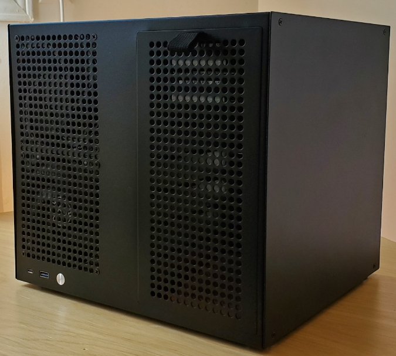
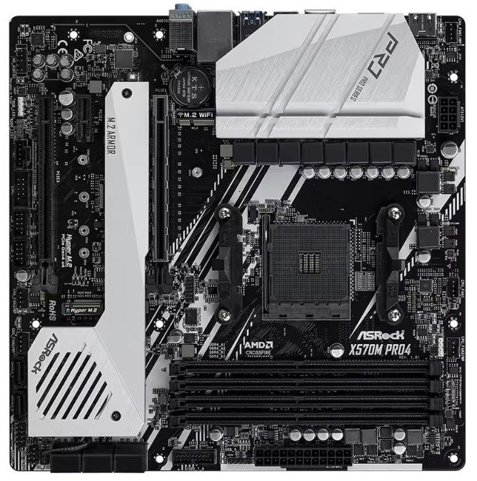
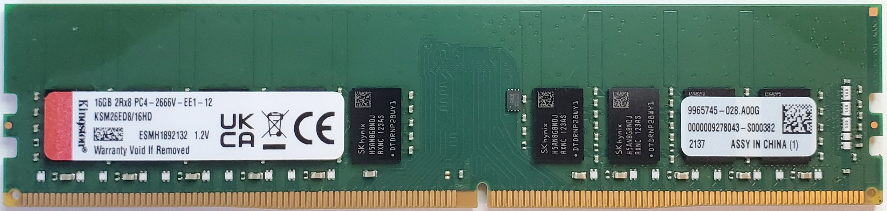
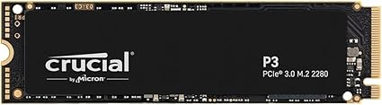
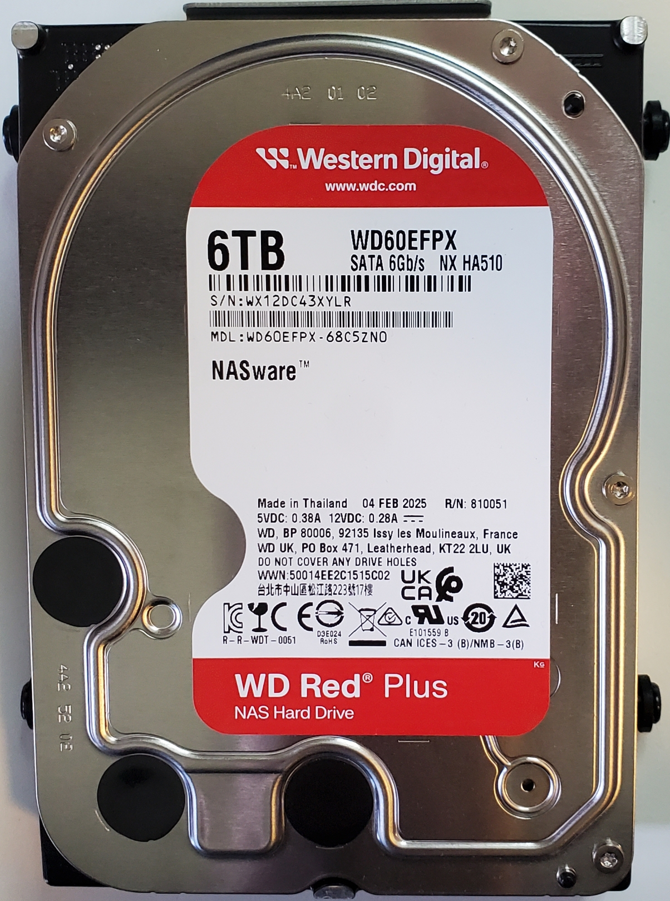
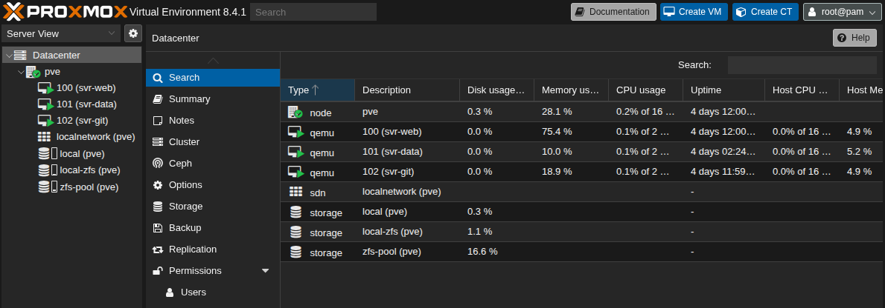

Home Server with Proxmox Virtualization
Building the server
I have been looking to build my own home server for a while. The goal was to have a small yet powerful machine that will serve as both a NAS and a virtualization server. My eyes were lurking towards the Jonsbo N3 case but I had hesitations:
- ITX motherboards usually have only 2 DIMM slots, fewer PCIe slots, and fewer SATA ports
- SFX power supply, which are less common and more expensive
- Airflow not optimal
I decided to put the project on hold until… Wolfgang’s Channel dropped this video
Case
Sagittarious 8-Bay
Wolfgang’s Channel was a big inspiration for building this home server. The turning point for me was learning about this case. It supports mATX motherboards and ATX power supplies. The simple design for adding/removing hard drives is neat and the case is made entirely of metal parts. It is the highest-priced item on the list, so indeed, one can go with a regular PC case and 3D print brackets for the hard drives, but I find the form factor ideal.
Ordering from AliExpress took less than two weeks.

Motherboard
ASRock X570M Pro4
If budget is a concern, you can choose a cheaper motherboard like the ASRock B550M Pro4 but I decided to pay almost double for this one because of three key features:
- 8 native SATA ports – no need for a SATA PCIe expansion card
- 2 Hyper M.2 sockets – perfect for NVMe boot drive live replication with ZFS
- 10-phase power design VRM – better when upgrading to a 16-core CPU

CPU
AMD Ryzen 7 PRO 4750G
8 cores / 16 threads at 3.6 GHz. I could have saved some money buying the Ryzen 5 PRO 4650G. However, I didn’t want to regret having fewer cores than I might need. My plan is to put this machine to work.
Integrated graphics (iGPU) is a huge benefit since I won’t be adding a GPU any time soon. It’s useful for accessing the BIOS and during the initial Proxmox installation. It might even come in handy for niche applications like video transcoding or RDP.
Also, ECC memory support is very cool.
RAM
Kingston ECC 2666MHz 16GB DDR4 (KSM26ED8/16HD)
Why bother with ECC memory? For basic NAS features, it might not be essential. But since I plan to run a lot of VMs in a semi-professional environment, I believe it’s worth it. Correcting single-bit errors adds important data integrity benefits. And since I rely mostly on the ZFS file system, ECC helps ensure that memory errors don’t silently corrupt checksums or file metadata before the data is written to disk.

NVMe SSD
M.2 NVMe 1T SSD Crucial P3
I was baffled trying to find a 256GB NVMe SSD. There are few options, and the price is almost the same as a 1TB model. Since I don’t want to spend money on a high-capacity SATA SSD right now, I decided to buy the 1TB NVMe and use it as both the boot drive for Proxmox and storage for VMs. I know most people avoid this setup but I see few downsides.
My motherboard has two Hyper M.2 sockets with almost identical specs. The one under the M.2 armor uses CPU lanes, while the other uses chipset lanes, which means slightly higher latency. Having another NVMe drive allows me to use ZFS live replication between them which adds better resilience to one of the more crucial aspects of the system.

Hard drive
Western Digital 6TB WD Red Plus
Mechanical hard drives are cheaper than SSDs, and I don’t need them to be fast. Their primary use is to store data I won’t be accessing often. If you plan to use ZFS, it is mandatory to get CMR drives, not SMR—the latter would be too slow. This is one of the reasons why the NAS community was angry at Western Digital when they changed the Red series to SMR and were not upfront about it. Now, only the Red Plus and Red Pro are CMR.
I started by looking at the Seagate IronWolf and other models from the same company. I read a lot of comments about them being loud. The server is sitting in my living room, so noise is an important factor. There’s a lot of information on the internet, but here’s what I gathered:
- The bigger the drive, the more noise it makes. While it’s not always the case, it’s a good rule of thumb.
- Helium-filled drives are less noisy but are usually only available in higher capacities.
I went with the WD 6TB Red Plus, and I’m really happy with them. They make almost no noise when not in use. When writing files, there’s a little bit of noise, but it’s barely noticeable from 6 feet away.
Over time, I will add more 2TB SATA SSDs.

Fans
ARCTIC P12 PWM case fans and the Thermalright AXP90-X36 CPU fan. I have full confidence in Wolfgang’s thoughtful research, and considering the price tag and quality, I’m 100% satisfied.
PSU
Corsair HX 520W
I had this power supply lying around the house. It has enough wattage for now and is modular, which helps minimize clutter inside the case. Considering its age, I’ll need to buy a new PSU at some point. I’ll look for something with good energy effiency and more power.
Other upgrades
Add a 2.5 Gbps PCIe network interface card if faster network speed is needed and a PiKVM for external controls
Virtualization

Proxmox
I decided to go with Proxmox because when Broadcom acquired VMware, they discontinued the free version. They have since brought it back but considering their history of shady business practices, I chose the open-source alternative. It’s a good choice for me because it’s Debian-based, which I’m very used to. The web interface is solid. Overall, Proxmox does exactly what I need.
Cloud
But why not use the cloud? There’s a long-running debate between cloud and on-premises—and it’s quite boring. Both are important. I use the cloud when I need to deploy in production. My build is intended to let me run as many VMs as I want. It’s a testbench. I mostly work with Linux servers and I like to compartmentalize my services into separate virtual machines that communicate with each other.
Nothing feels better than home.
Backup
Live replication is not a backup. For sufficient protection against data loss, you need at least one backup at an offsite location. I have not yet decided which strategy I’m going to use but here are the options I’m considering:
- Amazon S3 Glacier – A good, low-cost cloud solution for long-term storage
- Build another server – Possibly using the Jonsbo N3 case, which I would place at a different location, like at a family member house
Services
It might be late to explain exactly why I needed to build my home server, but if you’ve read this far, you deserve the truth.
Most of my data was spread across an external hard drive, a current laptop, a secondary Linux boot drive, and a few other PCs. I just grew tired of having to switch boot drives to access my data. I love having a centralized way to access it. Code is one of the most important types of data, and having projects scattered everywhere is a mess. It’s quite straightforward to create your own Git server. Once the code is committed and pushed to the server, you can retrieve it from any of your PCs. Also, I like to use SSH with VSCode. I can SSH into one of my Ubuntu servers from any of my machines and continue working on my project. Life is great.
Here’s a non-exhaustive list of services I plan to create on my home server.
Work:
- Web servers
- Git server
- File server
- Firewall
- Databases servers
- Remote Desktop
- VPN
Home:
- NAS
- Vaultwarden
- Jellyfin
- Photos
- Minecraft server
- Home assistant
- Surveillance
- Next-cloud